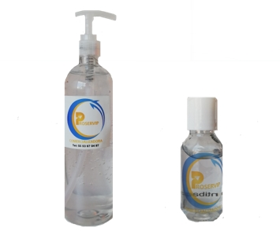
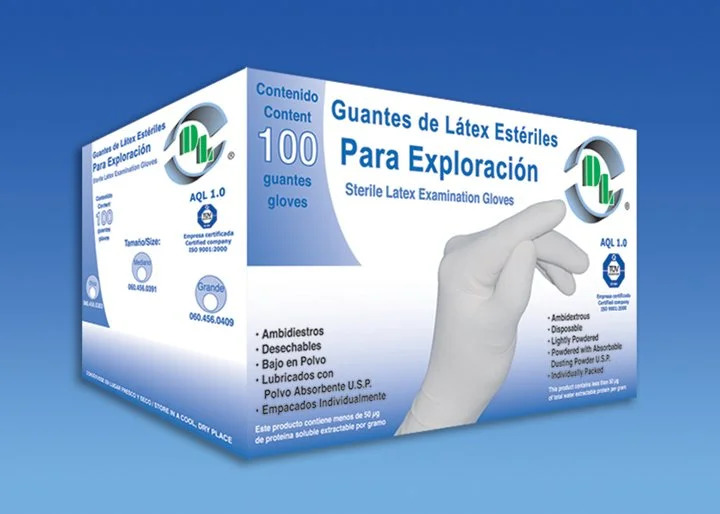

Dirección de Sisudi
Clzd. de la viga 1384, col. El sifon, Alc. Iztapalapa. CDMX, C.P. 09400
Correo de Sisudi
proveedorasisudi@gmail.com

Telefono de contacto
(55) 8987 5303

Insumos Médicos
Tu seguridad es nuestra prioridad
Conoce nuestros productos e insumos médicos por la contingencia, recuerda cuidar tu salud y de los que te rodean.
Para mayor comunicación sobre productos, disponibilidad y pedidos comunícate con nosotros 55 8804 5455

Gel antibacterial
- Producto germicida a base de alcohol en forma de gel.
- Formula a 70% alcohol
- Sin parabenos ni sensación pegajosa
- Sin sensación de resequedad
- Protección antibacterial
- Seguros para el uso en la piel
- Presentaciones con dosificador
- 500ml
- 60ml
Sanitizantes
- Producto antibacterial biodegradable
- Formula a base de alcohol
- No contiene cloro
- No irrita, no mancha ni decolora
- Ideal para desinfectar superficies
- Sin residuos dañinos para las superficies.
- Presentaciones: 20L 1L 120ml con aspersor
Cubrebocas tricapa termosellado
- Cubre bocas elaborado con 3 capas SMS
- Bandas de elástico ultra suave adheridas con termosellado y ajustador nasal
- Material hipoalergénico
- Resistente a líquidos, desechable
- Filtra eficazmente el polvo, los gases de escape, la niebla, el polen y más
- presentación: caja con 50 pz color Negro

Desinfectantes
- Producto desinfectante para superficies
- Acción bactericida, viricida, fungicida y esporicida, elimina en segundos el 99.99% de cualquier tipo de virus
- Formulado a base de ácido hipocloroso, ion hipoclorito, dióxido de cloro y ozono
- PH neutro, no corrosivo, líquido transparente, homogéneo incoloro, sin partículas en suspensión ni sedimentación, biodegradable
- Seguros para el uso en la piel
- Presentaciones con aspersor
- Presentaciones: 1L 60ml
Cabina desinfectante
- Modulo portátil desarmable
- Acabados en aluminio para contener el humo
- Puertas de cristal
- Temporizador y bomba
- Contenedor para producto
Guantes para cirujia
- Caja con 50 blister par.
- Desechables.
- No tóxicos.
- Con Cuello o Ribete que asegura su adecuada fijación.
- Extremadamente bajos en polvo absorbente grado medico, U.S.P.
- Tallas: 6.5, 7.0, 7.5, 8.0, 8.5.
- Estériles (EO gas).

Guantes para exploración
- Caja con 100 guantes ambidiestros
- Desechables
- No toxicos
- Con Cuello o Ribete que asegura su adecuada fijación.
- Extremadamente bajos en polvo absorbente grado medico, U.S.P.
- Tallas: Chico, mediano, grande.
- Estériles (EO gas).
Cubrebocas KN95
- Protégete de virus y bacterias
- El material del que está compuesto el cubrebocas es de Poliamida 100%
- Fácil de ajustar al rostro
- Reutilizable hasta un máximo de 7 días
- No dificulta la respiración y sus elásticos no se deforman
- 5 Capas de Filtración.
- Hidrofobico.
- Diseño liviano y ergonómico.
Careta de Policarbonato
- Reutilizable y muy ligera
- Hecha a base de policarbonato, tiene recubrimientos anti empañamiento y anti rayones
- Ofrece una barrera de protección física